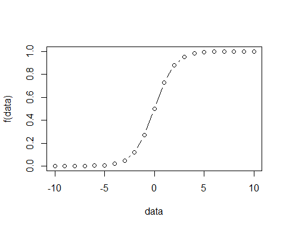
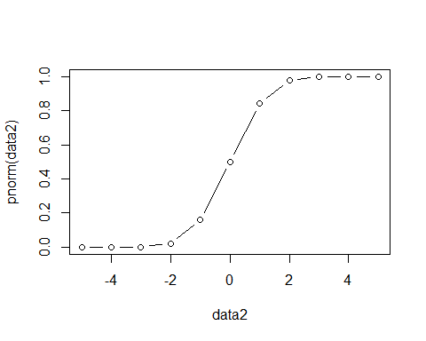

Basics
Logit
\[f(x)=log(\frac{p(y=1)}{1-p(y=1)})\] The basic idea of logistic regression: \[p(y=1)=\frac{1}{1+e^{-(\beta_0+\beta_1x_1+...+\beta_nx_n)}}=\frac{e^{\beta_0+\beta_1x_1+...+\beta_nx_n}}{1+e^{\beta_0+\beta_1x_1+...+\beta_nx_n}}\] Thus, \(e^{\beta_0+\beta_1x_1+...+\beta_nx_n}\) can be from \(-\infty\) to \(+\infty\), and \(p(y=1)\) will be always within the range of \((0,1)\).
f<-function(x){exp(x)/(1+exp(x))}
data<-seq(-10,10,1)
plot(data,f(data),type = "b")

We can also write the function into another format as follows: \[log \frac{p(y=1)}{1-p(y=1)}= \beta_0+\beta_1x_1+...+\beta_nx_n\] Thus, we know that the regression coeficients of \(\beta_i\) actually change the "log-odds" of the event. Of course, note that the magnitude of \(\beta_i\) is dependent upon the units of \(x_i\).
The following is an example testing whether that home teams are more likely to win in NFL games. The results show that the odd of winning is the same for both home and away teams.
mydata = read.csv(url('https://raw.githubusercontent.com/nfl-football-ops/Big-Data-Bowl/master/Data/games.csv'))
mydata$result_new<-ifelse(mydata$HomeScore>mydata$VisitorScore,1,0)
summary(mydata$result_new)
## Min. 1st Qu. Median Mean 3rd Qu. Max.
## 0.0000 0.0000 0.0000 0.4945 1.0000 1.0000
mylogit1 = glm(result_new~1, family=binomial, data=mydata)
summary(mylogit1)
##
## Call:
## glm(formula = result_new ~ 1, family = binomial, data = mydata)
##
## Deviance Residuals:
## Min 1Q Median 3Q Max
## -1.168 -1.168 -1.168 1.187 1.187
##
## Coefficients:
## Estimate Std. Error z value Pr(>|z|)
## (Intercept) -0.02198 0.20967 -0.105 0.917
##
## (Dispersion parameter for binomial family taken to be 1)
##
## Null deviance: 126.14 on 90 degrees of freedom
## Residual deviance: 126.14 on 90 degrees of freedom
## AIC: 128.14
##
## Number of Fisher Scoring iterations: 3
Probit
As noted above, logit \(f(x)=log(\frac{p(y=1)}{1-p(y=1)})\) provides the resulting range of \((0,1)\). Another way to provide the same rage is through the cdf of normal distribution.The following R code is used to illusrate this process.
data2<-seq(-5,5,1)
plot(data2,pnorm(data2),type = "b")
 Thus, the cdf of normal distribution can be used to indicate the probability of \(p(y=1)\).
\[\Phi(\beta_0+\beta_1x_1+...+\beta_nx_n )= p(y=1)\]
Similar to logit model, we can also write the inverse function of the cdf to get the function that can be from \(-\infty\) to \(+\infty\).
\[\beta_0+\beta_1x_1+...+\beta_nx_n =\Phi^{-1}(p(y=1))\]
Thus, for example, if \(X\beta\) = -2, based on \(\Phi(\beta_0+\beta_1x_1+...+\beta_nx_n )= p(y=1)\) we can get that the \(p(y=1)=0.023\).
In contrast, if \(X\beta\) = 3, the \(p(y=1)=0.999\).
## [1] 0.02275013
## [1] 0.9986501
Let's assume that there is a latent variable called \(Y^*\) such that
\[Y^*=X\beta+\epsilon, \epsilon \sim N(0,\sigma^2)\] You could think of \(Y^*\) as a kind of "proxy" between \(X\beta+\epsilon\) and the observed \(Y (1 or 0)\). Thus, we can get the following. Note that, it does not have to be zero, and can be any constant.
\[
Y^*=\begin{cases} 0 \;\;\: if \; y_i^* \leq 0 \\ 1 \;\;\: if \; y_i^* > 0 \end{cases}
\]
Thus,
\[y_i^* > 0 \Rightarrow \beta^{'}X_i + \epsilon_i >0 \Rightarrow \epsilon_i > -\beta^{'}X_i\]
Thus, we can write it as follows. Note that \(\frac{ \epsilon_i}{\sigma} \sim N(0,1)\)
\[p(y=1|x_i)= p(y_i^* >0|x_i)=p(\epsilon_i > -\beta^{'}X_i)= p(\frac{ \epsilon_i}{\sigma}>\frac{-\beta^{'}X_i}{\sigma})=\Phi(\frac{\beta^{'}X_i}{\sigma}) \] We thus can get:
\[p(y=0|x_i)=1-\Phi(\frac{\beta^{'}X_i}{\sigma})\]
For \(p(y=1|x_i)=\Phi(\frac{\beta^{'}X_i}{\sigma})\), we can not really estimate both \(\beta\) and \(\sigma\) as they are in a ratio. We can assume \(\sigma =1\), then \(\epsilon \sim N(0,1)\). We know \(y_i\) and \(x_i\) since we observe them. Thus, we can write it as follows.
\[p(y=1|x_i)=\Phi(\beta^{'}X_i)\]
MLE
Basic idea of MLE
Suppose that we flip a coin, \(y_i=0\) for tails and \(y_i=1\) for heads. If we get \(p\) heads from \(n\) trials, we can get the proportion of heads is \(p/n\), which is the sample mean. If we do not do any further calculation, this is our best guess.
Suppose that the true proablity is \(\rho\), then we can get:
\[
\mathbf{L}(y_i)=\begin{cases} \rho \;\;\: y_i = 1 \\ 1-\rho \;\;\: y_i = 0 \end{cases}
\] Thus, we can also write it as follows. \[\mathbf{L}(y_i) = \rho^{y_i}(1-\rho)^{1-y_i}\]
Thus, we can get:
\[\prod \mathbf{L}(y_i|\rho)=\rho^{\sum y_i}(1-\rho)^{\sum(1-y_i)}\] Further, we can get a log-transformed format.
\[log (\prod \mathbf{L}(y_i|\rho))=\sum y_i log \rho + \sum(1-y_i) log(1-\rho)\]
To maximize the log-function above, we can calculate the derivative with respect to \(\rho\). \[\frac{\partial log (\prod \mathbf{L}(y_i|\rho)) }{\partial \rho}=\sum y_i \frac{1}{\rho}-\sum(1-y_i) \frac{1}{1-\rho}\] Set the derivative to zero and solve for \(\rho\), we can get
\[\sum y_i \frac{1}{\rho}-\sum(1-y_i) \frac{1}{1-\rho}=0\] \[\Rightarrow (1-\rho)\sum y_i - \rho \sum(1-y_i) =0\] \[\Rightarrow \sum y_i-\rho\sum y_i - n\rho +\rho\sum y_i =0\] \[\Rightarrow \sum y_i - n\rho =0\] \[\Rightarrow \rho = \frac{\sum y_i}{n}=\frac{p}{n}\] Thus, we can see that the \(\rho\) maximizing the likelihood function is equal to the sample mean.
Coin flip example, probit, and logit
In the example above, we are not really trying to estimate a lot of regression coefficients. What we are doing actually is to calculate the sample mean, or intercept in the regresion sense. What does it mean? Let's use some data to explain it.
Suppose that we flip a coin 20 times and observe 8 heads. We can use the R's glm function to esimate the \(\rho\). If the result is consistent with what we did above, we should observe that the \(cdf\) of the esimate of \(\beta_0\) (i.e., intercept) should be equal to \(8/20=0.4\).
coins<-c(rep(1,times=8),rep(0,times=12))
table(coins)
## coins
## 0 1
## 12 8
coins<-as.data.frame(coins)
Probit
probitresults <- glm(coins ~ 1, family = binomial(link = "probit"), data = coins)
probitresults
##
## Call: glm(formula = coins ~ 1, family = binomial(link = "probit"),
## data = coins)
##
## Coefficients:
## (Intercept)
## -0.2533
##
## Degrees of Freedom: 19 Total (i.e. Null); 19 Residual
## Null Deviance: 26.92
## Residual Deviance: 26.92 AIC: 28.92
pnorm(probitresults$coefficients)
## (Intercept)
## 0.4
As we can see the intercept is \(-0.2533\), and thus \(\Phi(-0.2533471)=0.4\)
Logit
We can also use logit link to calculate the intercept as well. Recall that
\[p(y=1)=\frac{1}{1+e^{-(\beta_0+\beta_1x_1+...+\beta_nx_n)}}=\frac{e^{\beta_0+\beta_1x_1+...+\beta_nx_n}}{1+e^{\beta_0+\beta_1x_1+...+\beta_nx_n}}\] Thus,
\[p(y=1)=\frac{e^{\beta_0}}{1+e^{\beta_0}}\]
logitresults <- glm(coins ~ 1, family = binomial(link = "logit"), data = coins)
logitresults$coefficients
## (Intercept)
## -0.4054651
exp(logitresults$coefficients)/(1+exp(logitresults$coefficients))
## (Intercept)
## 0.4
Note that, the defaul link for the binomial in the glm function in logit.
Further on logit
The probablity of \(y=1\) is as follows:
\[p=p(y=1)=\frac{1}{1+e^{-(\beta_0+\beta_1x_1+...+\beta_nx_n)}}=\frac{e^{\beta_0+\beta_1x_1+...+\beta_nx_n}}{1+e^{\beta_0+\beta_1x_1+...+\beta_nx_n}}\]
Thus, the likelihood function is as follows:
\[L=\prod p^{y_i}(1-p)^{1-y_i}=\prod (\frac{1}{1+e^{-(\beta_0+\beta_1x_1+...+\beta_nx_n)}})^{y_i}(\frac{1}{1+e^{\beta_0+\beta_1x_1+...+\beta_nx_n}})^{1-y_i}\]
\[=\prod (1+e^{-(\beta_0+\beta_1x_1+...+\beta_nx_n)})^{-y_i}(1+e^{\beta_0+\beta_1x_1+...+\beta_nx_n})^{-(1-y_i)}\]
Thus, the log-likelihood is as follows: \[logL=\sum (-y_i \cdot log(1+e^{-(\beta_0+\beta_1x_1+...+\beta_nx_n)})-(1-y_i)\cdot log(1+e^{\beta_0+\beta_1x_1+...+\beta_nx_n}))\]
Typically, optimisers minimize a function, so we use negative log-likelihood as minimising that is equivalent to maximising the log-likelihood or the likelihood itself.
#Source of R code: https://www.r-bloggers.com/logistic-regression/
mle.logreg = function(fmla, data)
{
# Define the negative log likelihood function
logl <- function(theta,x,y){
y <- y
x <- as.matrix(x)
beta <- theta[1:ncol(x)]
# Use the log-likelihood of the Bernouilli distribution, where p is
# defined as the logistic transformation of a linear combination
# of predictors, according to logit(p)=(x%*%beta)
loglik <- sum(-y*log(1 + exp(-(x%*%beta))) - (1-y)*log(1 + exp(x%*%beta)))
return(-loglik)
}
# Prepare the data
outcome = rownames(attr(terms(fmla),"factors"))[1]
dfrTmp = model.frame(data)
x = as.matrix(model.matrix(fmla, data=dfrTmp))
y = as.numeric(as.matrix(data[,match(outcome,colnames(data))]))
# Define initial values for the parameters
theta.start = rep(0,(dim(x)[2]))
names(theta.start) = colnames(x)
# Calculate the maximum likelihood
mle = optim(theta.start,logl,x=x,y=y, method = 'BFGS', hessian=T)
out = list(beta=mle$par,vcov=solve(mle$hessian),ll=2*mle$value)
}
mydata = read.csv(url('https://stats.idre.ucla.edu/stat/data/binary.csv'))
mylogit1 = glm(admit~gre+gpa+as.factor(rank), family=binomial, data=mydata)
mydata$rank = factor(mydata$rank) #Treat rank as a categorical variable
fmla = as.formula("admit~gre+gpa+rank") #Create model formula
mylogit2 = mle.logreg(fmla, mydata) #Estimate coefficients
print(cbind(coef(mylogit1), mylogit2$beta))
## [,1] [,2]
## (Intercept) -3.989979073 -3.772676422
## gre 0.002264426 0.001375522
## gpa 0.804037549 0.898201239
## as.factor(rank)2 -0.675442928 -0.675543009
## as.factor(rank)3 -1.340203916 -1.356554831
## as.factor(rank)4 -1.551463677 -1.563396035
Linear Mixed Models
The following is a shortened version of Jonathan Rosenblatt's LMM tutorial. http://www.john-ros.com/Rcourse/lme.html.
In addition, another reference is from Douglas Bates's R package document. https://cran.r-project.org/web/packages/lme4/vignettes/lmer.pdf?fbclid=IwAR1nmmRP9A0BrhKdgBibNjM5acR_spTpXV8QlQGdmTWyQz3ZtV3LYn6kCbQ
Assume that \(y\) is a function of \(x\) and \(u\), where \(x\) is the fixed effect and \(u\) is the random effect. Thus, we can get,
\[y|x, u = x'\beta+z'u+\epsilon\]
For random effect, one example can be that you want to test the treatment effect, and sample 8 observations from 4 groups. You measure before and after the treatment. In this case, \(x\) represents the treatment effect, whereas \(z\) represents the group effect (i.e., random effect). Note that, in this case, it reminds the paired t-test. Remember in SPSS, why do we do paired t-test? Typically, it is the case when we measure a subject (or, participant) twice. In this case, we can consider each participant as an unit of random effect (rather than as group in the last example.)
Calculate mean
The following code generates 4 numbers (\(N(0,10)\)) for 4 groups. Then, replicate it within each group.That is, in the end, there are 8 observations.
Note that, in the following code, there are no "independent variables". Both the linear model and mixed model are actually just trying to calculate the mean. Note that lmer(y~1+1|groups) and lmer(y~1|groups) will generate the same results.
set.seed(123)
n.groups <- 4 # number of groups
n.repeats <- 2 # samples per group
#Generating index for observations belong to the same group
groups <- as.factor(rep(1:n.groups, each=n.repeats))
n <- length(groups)
#Generating 4 random numbers, assuming normal distribution
z0 <- rnorm(n.groups, 0, 10)
z <- z0[as.numeric(groups)] # generate and inspect random group effects
z
## [1] -5.6047565 -5.6047565 -2.3017749 -2.3017749 15.5870831 15.5870831 0.7050839
## [8] 0.7050839
epsilon <- rnorm(n,0,1) # generate measurement error
beta0 <- 2 # this is the actual parameter of interest! The global mean.
y <- beta0 + z + epsilon # sample from an LMM
# fit a linear model assuming independence
# i.e., assume that there is no "group things".
lm.5 <- lm(y~1)
# fit a mixed-model that deals with the group dependence
#install.packages("lme4")
library(lme4)
lme.5.a <- lmer(y~1+1|groups)
lme.5.b <- lmer(y~1|groups)
lm.5
##
## Call:
## lm(formula = y ~ 1)
##
## Coefficients:
## (Intercept)
## 4.283
## Linear mixed model fit by REML ['lmerMod']
## Formula: y ~ 1 + 1 | groups
## REML criterion at convergence: 36.1666
## Random effects:
## Groups Name Std.Dev.
## groups (Intercept) 8.8521
## Residual 0.8873
## Number of obs: 8, groups: groups, 4
## Fixed Effects:
## (Intercept)
## 4.283
## Linear mixed model fit by REML ['lmerMod']
## Formula: y ~ 1 | groups
## REML criterion at convergence: 36.1666
## Random effects:
## Groups Name Std.Dev.
## groups (Intercept) 8.8521
## Residual 0.8873
## Number of obs: 8, groups: groups, 4
## Fixed Effects:
## (Intercept)
## 4.283
Test the treatment effect
As we can see that, LLM and paired t-test generate the same t-value.
times<-rep(c(1,2),4) # first time and second time
times
## [1] 1 2 1 2 1 2 1 2
data_combined<-cbind(y,groups,times)
data_combined
## y groups times
## [1,] -3.4754687 1 1
## [2,] -1.8896915 1 2
## [3,] 0.1591413 2 1
## [4,] -1.5668361 2 2
## [5,] 16.9002303 3 1
## [6,] 17.1414212 3 2
## [7,] 3.9291657 4 1
## [8,] 3.0648977 4 2
lme_diff_times<- lmer(y~times+(1|groups))
t_results<-t.test(y~times, paired=TRUE)
lme_diff_times
## Linear mixed model fit by REML ['lmerMod']
## Formula: y ~ times + (1 | groups)
## REML criterion at convergence: 35.0539
## Random effects:
## Groups Name Std.Dev.
## groups (Intercept) 8.845
## Residual 1.013
## Number of obs: 8, groups: groups, 4
## Fixed Effects:
## (Intercept) times
## 4.5691 -0.1908
print("The following results are from paired t-test")
## [1] "The following results are from paired t-test"
## t
## 0.2664793
Another example
data(Dyestuff, package='lme4')
attach(Dyestuff)
## The following objects are masked from Dyestuff (pos = 4):
##
## Batch, Yield
## The following objects are masked from Dyestuff (pos = 8):
##
## Batch, Yield
## Batch Yield
## 1 A 1545
## 2 A 1440
## 3 A 1440
## 4 A 1520
## 5 A 1580
## 6 B 1540
## 7 B 1555
## 8 B 1490
## 9 B 1560
## 10 B 1495
## 11 C 1595
## 12 C 1550
## 13 C 1605
## 14 C 1510
## 15 C 1560
## 16 D 1445
## 17 D 1440
## 18 D 1595
## 19 D 1465
## 20 D 1545
## 21 E 1595
## 22 E 1630
## 23 E 1515
## 24 E 1635
## 25 E 1625
## 26 F 1520
## 27 F 1455
## 28 F 1450
## 29 F 1480
## 30 F 1445
lme_batch<- lmer( Yield ~ 1 + (1|Batch) , Dyestuff )
summary(lme_batch)
## Linear mixed model fit by REML ['lmerMod']
## Formula: Yield ~ 1 + (1 | Batch)
## Data: Dyestuff
##
## REML criterion at convergence: 319.7
##
## Scaled residuals:
## Min 1Q Median 3Q Max
## -1.4117 -0.7634 0.1418 0.7792 1.8296
##
## Random effects:
## Groups Name Variance Std.Dev.
## Batch (Intercept) 1764 42.00
## Residual 2451 49.51
## Number of obs: 30, groups: Batch, 6
##
## Fixed effects:
## Estimate Std. Error t value
## (Intercept) 1527.50 19.38 78.8
Full LMM model
In the following, I used the data from the package of lme4. For Days + (1 | Subject), it only has random intercept; in contrast, Days + ( Days| Subject ) has both random intercept and random slope for Days. Note that, random effects do not generate specific slopes for each level of Days, but rather just a variance of all the slopes.
Therefore, we can see that "Days + ( Days| Subject )" and "Days + ( 1+Days| Subject )" generate the same results. For more discussion, you can refer to the following link: https://www.jaredknowles.com/journal/2013/11/25/getting-started-with-mixed-effect-models-in-r
data(sleepstudy, package='lme4')
attach(sleepstudy)
## The following objects are masked from sleepstudy (pos = 4):
##
## Days, Reaction, Subject
## The following objects are masked from sleepstudy (pos = 8):
##
## Days, Reaction, Subject
fm1 <- lmer(Reaction ~ Days + (1 | Subject), sleepstudy)
summary(fm1)
## Linear mixed model fit by REML ['lmerMod']
## Formula: Reaction ~ Days + (1 | Subject)
## Data: sleepstudy
##
## REML criterion at convergence: 1786.5
##
## Scaled residuals:
## Min 1Q Median 3Q Max
## -3.2257 -0.5529 0.0109 0.5188 4.2506
##
## Random effects:
## Groups Name Variance Std.Dev.
## Subject (Intercept) 1378.2 37.12
## Residual 960.5 30.99
## Number of obs: 180, groups: Subject, 18
##
## Fixed effects:
## Estimate Std. Error t value
## (Intercept) 251.4051 9.7467 25.79
## Days 10.4673 0.8042 13.02
##
## Correlation of Fixed Effects:
## (Intr)
## Days -0.371
fm2<-lmer ( Reaction ~ Days + ( Days| Subject ) , data= sleepstudy )
summary(fm2)
## Linear mixed model fit by REML ['lmerMod']
## Formula: Reaction ~ Days + (Days | Subject)
## Data: sleepstudy
##
## REML criterion at convergence: 1743.6
##
## Scaled residuals:
## Min 1Q Median 3Q Max
## -3.9536 -0.4634 0.0231 0.4633 5.1793
##
## Random effects:
## Groups Name Variance Std.Dev. Corr
## Subject (Intercept) 611.90 24.737
## Days 35.08 5.923 0.07
## Residual 654.94 25.592
## Number of obs: 180, groups: Subject, 18
##
## Fixed effects:
## Estimate Std. Error t value
## (Intercept) 251.405 6.824 36.843
## Days 10.467 1.546 6.771
##
## Correlation of Fixed Effects:
## (Intr)
## Days -0.138
fm3<-lmer ( Reaction ~ Days + (1+Days| Subject ) , data= sleepstudy )
summary(fm3)
## Linear mixed model fit by REML ['lmerMod']
## Formula: Reaction ~ Days + (1 + Days | Subject)
## Data: sleepstudy
##
## REML criterion at convergence: 1743.6
##
## Scaled residuals:
## Min 1Q Median 3Q Max
## -3.9536 -0.4634 0.0231 0.4633 5.1793
##
## Random effects:
## Groups Name Variance Std.Dev. Corr
## Subject (Intercept) 611.90 24.737
## Days 35.08 5.923 0.07
## Residual 654.94 25.592
## Number of obs: 180, groups: Subject, 18
##
## Fixed effects:
## Estimate Std. Error t value
## (Intercept) 251.405 6.824 36.843
## Days 10.467 1.546 6.771
##
## Correlation of Fixed Effects:
## (Intr)
## Days -0.138
Serial correlations in time and space
The hierarchical model of \(y|x, u = x'\beta+z'u+\epsilon\) can work well for correlations within blocks, but not for correlations in time as the correlations decay in time. The following uses nlme package to calculate time serial data.
library(nlme)
head(nlme::Ovary,n=50)
## Grouped Data: follicles ~ Time | Mare
## Mare Time follicles
## 1 1 -0.13636360 20
## 2 1 -0.09090910 15
## 3 1 -0.04545455 19
## 4 1 0.00000000 16
## 5 1 0.04545455 13
## 6 1 0.09090910 10
## 7 1 0.13636360 12
## 8 1 0.18181820 14
## 9 1 0.22727270 13
## 10 1 0.27272730 20
## 11 1 0.31818180 22
## 12 1 0.36363640 15
## 13 1 0.40909090 18
## 14 1 0.45454550 17
## 15 1 0.50000000 14
## 16 1 0.54545450 18
## 17 1 0.59090910 14
## 18 1 0.63636360 16
## 19 1 0.68181820 17
## 20 1 0.72727270 18
## 21 1 0.77272730 18
## 22 1 0.81818180 17
## 23 1 0.86363640 14
## 24 1 0.90909090 12
## 25 1 0.95454550 12
## 26 1 1.00000000 14
## 27 1 1.04545500 10
## 28 1 1.09090900 11
## 29 1 1.13636400 16
## 30 2 -0.15000000 6
## 31 2 -0.10000000 6
## 32 2 -0.05000000 8
## 33 2 0.00000000 7
## 34 2 0.05000000 16
## 35 2 0.10000000 10
## 36 2 0.15000000 13
## 37 2 0.20000000 9
## 38 2 0.25000000 7
## 39 2 0.30000000 6
## 40 2 0.35000000 8
## 41 2 0.40000000 8
## 42 2 0.45000000 6
## 43 2 0.50000000 8
## 44 2 0.55000000 7
## 45 2 0.60000000 9
## 46 2 0.65000000 6
## 47 2 0.70000000 4
## 48 2 0.75000000 5
## 49 2 0.80000000 8
## 50 2 0.85000000 11
fm1Ovar.lme <- nlme::lme(fixed=follicles ~ sin(2*pi*Time) + cos(2*pi*Time),
data = Ovary,
random = pdDiag(~sin(2*pi*Time)),
correlation=corAR1() )
summary(fm1Ovar.lme)
## Linear mixed-effects model fit by REML
## Data: Ovary
## AIC BIC logLik
## 1563.448 1589.49 -774.724
##
## Random effects:
## Formula: ~sin(2 * pi * Time) | Mare
## Structure: Diagonal
## (Intercept) sin(2 * pi * Time) Residual
## StdDev: 2.858385 1.257977 3.507053
##
## Correlation Structure: AR(1)
## Formula: ~1 | Mare
## Parameter estimate(s):
## Phi
## 0.5721866
## Fixed effects: follicles ~ sin(2 * pi * Time) + cos(2 * pi * Time)
## Value Std.Error DF t-value p-value
## (Intercept) 12.188089 0.9436602 295 12.915760 0.0000
## sin(2 * pi * Time) -2.985297 0.6055968 295 -4.929513 0.0000
## cos(2 * pi * Time) -0.877762 0.4777821 295 -1.837159 0.0672
## Correlation:
## (Intr) s(*p*T
## sin(2 * pi * Time) 0.000
## cos(2 * pi * Time) -0.123 0.000
##
## Standardized Within-Group Residuals:
## Min Q1 Med Q3 Max
## -2.34910093 -0.58969626 -0.04577893 0.52931186 3.37167486
##
## Number of Observations: 308
## Number of Groups: 11
Basic Stat Concepts
Score
The score is the gradient (the vector of partial derivatives) of \(log L(\theta)\), with respect to an m-dimensional parameter vector \(\theta\).
\[S(\theta) = \frac{\partial\ell}{\partial \theta}\] Typically, they use \(\nabla\) to denote the partical derivative.
\[\nabla \ell\]
Such differentiation will generate a \(m \times 1\) row vector, which indicates the sensitivity of the likelihood.
Quote from Steffen Lauritzen's slides: "Generally the solution to this equation must be calculated by iterative methods. One of the most common methods is the Newton–Raphson method and this is based on successive approximations to the solution, using Taylor’s theorem to approximate the equation."
For instance, using logit link, we can get the first derivative of log likelihood logistic regression as follows. We can not really find \(\beta\) easily to make the equation to be 0.
\[\begin{aligned}
\frac{\partial \ell} {\partial \beta}
&= \sum_{i=1}^{n}x_i^T[y_i-\frac{e^{\beta^Tx_i}}{1+e^{\beta^Tx_i}}] \\
&=\sum_{i=1}^{n} x_i^T[y_i-\hat{y_i}]
\end{aligned}\]
Gradient and Jacobian
Remarks: This part discusses gradient in a more general sense.
When \(f(x)\) is only in a single dimension space:
\(\mathbb{R}^n \rightarrow \mathbb{R}\)
\[\nabla f(x)=[\frac{\partial f}{\partial x_1},\frac{\partial f}{\partial x_2},...,\frac{\partial f}{\partial x_n}]\] When \(f(x)\) is only in a m-dimension space (i.e., Jacobian): \(\mathbb{R}^n \rightarrow \mathbb{R^m}\)
\[Jac(f)=\begin{bmatrix}
\frac{\partial f_1}{\partial x_1} & \frac{\partial f_1}{\partial x_2} & \frac{\partial f_1}{\partial x_3} & ... & \frac{\partial f_1}{\partial x_n}\\
\frac{\partial f_2}{\partial x_1} & \frac{\partial f_2}{\partial x_2} & \frac{\partial f_2}{\partial x_3} & ... & \frac{\partial f_2}{\partial x_n} \\
...\\
\frac{\partial f_m}{\partial x_1} & \frac{\partial f_m}{\partial x_2} & \frac{\partial f_n}{\partial x_3} & ... & \frac{\partial f_m}{\partial x_n}
\end{bmatrix}\]
For instance,
\(\mathbb{R}^n \rightarrow \mathbb{R}\):
\[f(x,y)=x^2+2y\] \[\nabla f(x,y)=[\frac{\partial f}{\partial x},\frac{\partial f}{\partial y}]=[2x,2]\] \(\mathbb{R}^n \rightarrow \mathbb{R^m}\)
\[f(x,y)=(x^2+2y,x^3)\] \[Jac(f)=\begin{bmatrix}
2x & 2\\
2x^2 & 0
\end{bmatrix}\]
Canonical link function
Inspired by a Stack Exchange post, I created the following figure:
\[ \frac{Paramter}{\theta} \longrightarrow \gamma^{'}(\theta) = \mu \longrightarrow \frac{Mean}{\mu} \longrightarrow g(\mu) = \eta \longrightarrow \frac{ Linear predictor}{\eta} \]
For the case of \(n\) time Bernoulli (i.e., Binomial), its canonical link function is logit. Specifically,
\[ \frac{Paramter}{\theta=\beta^Tx_i} \longrightarrow \gamma^{'}(\theta)= \frac{e^{\beta^Tx_i}}{1+e^{\beta^Tx_i}}\longrightarrow \frac{Mean}{\mu=\frac{e^{\beta^Tx_i}}{1+e^{\beta^Tx_i}}}\longrightarrow g(\mu) = log \frac{\frac{e^{\beta^Tx_i}}{1+e^{\beta^Tx_i}}}{1-\frac{e^{\beta^Tx_i}}{1+e^{\beta^Tx_i}}}\longrightarrow \frac{ Linear predictor}{\eta = \beta^Tx_i}\] Thus, we can see that,
\[\theta \equiv \eta \] The link function \(g(\mu)\) relates the linear predictor \(\eta = \beta^Tx_i\) to the mean \(\mu\).
Remarks:
Parameter is \(\theta = \beta ^T x_i\) (Not \(\mu\)!).
\(\mu=p(y=1)=\frac{e^{\beta^Tx_i}}{1+e^{\beta^Tx_i}}\) (Not logit!).
Link function (i.e., \(g(\mu)\)) = logit = logarithm of odds = log \(\frac{Event - Happened }{Event - Not - Happened}\).
\(g(\mu) = log \frac{\mu}{1-\mu}=\beta^T x_i\). Thus, link function = linear predictor = log odds!
Quote from the Stack Exchange post "Newton Method and Fisher scoring for finding the ML estimator coincide, these links simplify the derivation of the MLE."
(Recall, we know that \(\mu\) or \(p(y=1)\) is the mean function. Recall that, \(n\) trails of coin flips, and get \(p\) heads. Thus \(\mu = \frac{p}{n}\).)
Ordinary Least Squares (OLS)
Suppose we have \(n\) observation, and \(m\) variables.
\[\begin{bmatrix}
x_{11} & x_{12} & x_{13} & ... & x_{1m}\\
x_{21} & x_{22} & x_{23} & ... & x_{2m} \\
...\\
x_{n1} & x_{n2} & x_{n3} & ... & x_{nm}
\end{bmatrix}\]
Thus, we can write it as the following \(n\) equations.
\[y_1=\beta_0+\beta_1 x_{11}+\beta_2 x_{12}+...+ \beta_m x_{1m}\] \[y_2=\beta_0+\beta_1 x_{21}+\beta_2 x_{22}+...+ \beta_m x_{2m}\] \[y_3=\beta_0+\beta_1 x_{31}+\beta_2 x_{32}+...+ \beta_m x_{3m}\] \[...\]
\[y_n=\beta_0+\beta_1 x_{n1}+\beta_2 x_{n2}+...+ \beta_m x_{nm}\]
We can combine all the \(n\) equations as the following one:
\[y_i=\beta_0+\beta_1 x_{i1}+\beta_2 x_{i2}+...+ \beta_m x_{im} (i \in [1,n])\]
We can further rewrite it as a matrix format as follows.
\[y= X \beta\] Where,
\[y = \begin{bmatrix}y_1 \\
y_2 \\
y_3 \\
y_4 \\
...\\
y_n \\
\end{bmatrix}\]
\[X=\begin{bmatrix}
1 & x_{11} & x_{12} & x_{13} & ... & x_{1m}\\
1 & x_{21} & x_{22} & x_{23} & ... & x_{2m} \\
...\\
1 & x_{n1} & x_{n2} & x_{n3} & ... & x_{nm}
\end{bmatrix}\]
\[\beta = \begin{bmatrix}\beta_0 \\
\beta_1 \\
\beta_2 \\
\beta_3 \\
...\\
\beta_m \\
\end{bmatrix}\]
Since later we need the inverse of \(X\), we need to make it into a square matrix.
\[X^Ty=X^TX \hat{\beta} \Rightarrow \hat{\beta} = (X^TX)^{-1} X^Ty\]
We can use R to implement this calculation. As we can see, there is no need to do any iterations at all, but rather just pure matrix calculation.
X<-matrix(rnorm(1000),ncol=2) # we define a 2 column matrix, with 500 rows
X<-cbind(1,X) # add a 1 constant
beta_true<-c(2,1,2) # True regression coefficients
beta_true<-as.matrix(beta_true)
y=X%*%beta_true+rnorm(500)
transposed_X<-t(X)
beta_hat<-solve(transposed_X%*%X)%*%transposed_X%*%y
beta_hat
## [,1]
## [1,] 2.017690
## [2,] 1.054682
## [3,] 2.037671
Side Notes The function of as.matrix will automatically make c(2,1,2) become the dimension of \(3 \times 1\), you do not need to transpose the \(\beta\).
Taylor series
\[\begin{aligned}
f(x)|_{a} &=f(a)+\frac{f^{'}(a)}{1!}(x-a)+\frac{f^{'}(a)}{2!}(x-a)^2+\frac{f^{''}(a)}{3!}(x-a)^{3}+...\\&=\sum_{n=0}^{\infty} \frac{f^{n}(a)}{n!}(x-a)^n
\end{aligned}\]
For example:
\[\begin{aligned}
e^x |_{a=0} &= e^a+ \frac{e^a}{1!}(x-a)+\frac{e^a}{2!}(x-a)^2+...+\frac{e^a}{n!}(x-a)^n \\
&= 1+ \frac{1}{1!}x+\frac{1}{2!}x^2+...+\frac{1}{n!}x^n
\end{aligned}\]
if \(x=2\)
\(e^2 = 7.389056\)
\(e^2 \approx 1+\frac{1}{1!}x =1+\frac{1}{1!}2=3\)
\(e^2 \approx 1+\frac{1}{1!}x+\frac{1}{2!}x^2 =1+\frac{1}{1!}2 + \frac{1}{2!}2 =5\) ...
\(e^2 \approx 1+\frac{1}{1!}x+\frac{1}{2!}x^2 +\frac{1}{3!}x^2+\frac{1}{4!}x^2+\frac{1}{5!}x^2=7.2666...\)
Computing Techniques
Since GLMM can use EM algorithm in its maximum likelihood calculation (see McCulloch, 1994), it is practically useful to rehearse EM and other computing techniques.
Monte carlo approximation
Example: calculate the integral of \(p(z>2)\) when \(z \sim N(0,1)\). To use Monte Carlo approximation, we can have an indicator function, which will determine whether the sample from \(N(0,1)\) will be included into the calculation of the integral.
Nsim=10^4
indicator=function(x){
y=ifelse((x>2),1,0)
return(y)}
newdata<-rnorm(Nsim, 0,1 )
mc=c(); v=c(); upper=c(); lower=c()
for (j in 1:Nsim)
{
mc[j]=mean(indicator(newdata[1:j]))
v[j]=(j^{-1})*var(indicator(newdata[1:j]))
upper[j]=mc[j]+1.96*sqrt(v[j])
lower[j]=mc[j]-1.96*sqrt(v[j])
}
library(ggplot2)
values=c(mc,upper,lower)
type=c(rep("mc",Nsim),rep("upper",Nsim),rep("lower",Nsim))
iter=rep(seq(1:Nsim),3)
data=data.frame(val=values, tp=type, itr=iter)
Rcode<-ggplot(data,aes(itr,val,col=tp))+geom_line(size=0.5)
Rcode+geom_hline(yintercept=1-pnorm(2),color="green",size=0.5)
## Warning: Removed 2 rows containing missing values (geom_path).

Importance sampling
Importance sampling has samples generated from a different distribution than the distribution of interest. Specifically, assume that we want to calculate the expected value of \(h(x)\), and \(x \sim f(x)\).
\[E(h(x))=\int h(x) f(x) dx = \int h(x) \frac{f(x)}{g(x)} g(x) dx \] We can sample \(x_i\) from \(g(x)\) and then calculate the mean of \(h(x_i) \frac{f(x_i)}{g(x_i)}\).
Using the same explane above, we can use a shifted exponential distribution to help calculate the intergral for normal distribution. Specifically,
\[\int_2^{\infty} \frac{1}{2 \pi} e^{-\frac{1}{2}x^2}dx = \int_2^{\infty} \frac{\frac{1}{2 \pi} e^{-\frac{1}{2}x^2}}{e^{-(x-2)}} e^{-(x-2)}dx \] The idea is that, we can generate \(x_i\) from exponential distribution of \(e^{-(x-2)}\), and then insert them into the targeted "expected (value) function" of \(\frac{\frac{1}{2 \pi} e^{-\frac{1}{2}x^2}}{e^{-(x-2)}}\). Thus, as you can see, importance sampling is based on the law of large numbers (i.e., If the same experiment or study is repeated independently a large number of times, the average of the results of the trials must be close to the expected value). We can use it to calculate integral based on link of the definition of expected value.
Nsim=10^4
normal_density=function(x)
{y=(1/sqrt(2*pi))*exp(-0.5*(x^2))
return(y)}
x=2-log(runif(Nsim))
ImpS=c(); v=c(); upper=c(); lower=c()
for (j in 1:Nsim)
{
ImpS[j]=mean(normal_density(x[1:j])/exp(-(x[1:j]-2)))
v[j]=(j^{-1})*var(normal_density(x[1:j])/exp(-(x[1:j]-2)))
upper[j]=ImpS[j]+1.96*sqrt(v[j])
lower[j]=ImpS[j]-1.96*sqrt(v[j])
}
library(ggplot2)
values=c(ImpS,upper,lower)
type=c(rep("mc",Nsim),rep("upper",Nsim),rep("lower",Nsim))
iter=rep(seq(1:Nsim),3)
data=data.frame(val=values, tp=type, itr=iter)
ggplot(data,aes(itr,val,col=tp))+geom_line(size=0.5)+
geom_hline(yintercept=1-pnorm(2),color="green",size=0.5)
## Warning: Removed 2 rows containing missing values (geom_path).

Newton Raphson algorithm
The main purpose of Newton Raphson algorithm is to calculate the root of a function (e.g., \(x^2-3=0\)). We know that in order to maximize the MLE, we need to calculate the first derivatice of the function and then set it to zero \(\ell^{'}(x)=0\). Thus, we can use the same Newton Raphson method to help calculate the MLE maximization as well.
There are different ways to understand Newton Raphson method, but I found the method fo geometric the most easy way to explain.
Specifically, suppose that you want to calculate the root of a function \(f(x)=0\). We assume the root is \(r\). However, we do not that, and we randomly guess a point of \(a\). Thus, we can get a tangent line with slope of \(f^{'}(a)\) and a point of \((a,f(a))\). Since we know the slope and one of its points, we can write the function for this tangent line.
\[y-f(a)=f^{'}(a)(x-a)\] To calculate the \(x-intercept\), namely \(b\) in the figure, we can set \(y=0\), and get the following:
\[-f(a)=f^{'}(a)(x-a) \Rightarrow x (or, b)= a-\frac{f(a)}{f^{'}(a)}\] If there is significant difference of \(|a-b|\), we know that our orginal guess of \(a\) is not good. We better use \(b\) as the next guess, and calculate its tangent line again. To generalize, we can write it as follows. \[x_{t+1}=x_{t}-\frac{f(x_t)}{f^{'}(x_t)}\]
Okay, this method above is to calculate the root. For MLE, we can also use this method to calculate the root for the \(\ell ^{'}=0\). We can write it as follows.
\[x_{t+1}=x_{t}-\frac{\ell^{'}(x_t)}{\ell^{''}(x_t)}\] Often, \(x\) is not just a single unknow parameter, but a vector. For this case, we can write it as follows.
\[\beta_{t+1}=\beta_{t}-\frac{\ell^{'}(\beta_t)}{\ell^{''}(\beta_t)}\]
Calculate the root
\(x^3-5=0\)
Note that, this is obviously not a maximization problem. In contrast, it involves a function with zero. As we can see, we can think it as the first order of Taylor approximation. That is, \(f^{'}(x)=x^3-5=0\). As we can see the following plot, it converts very quickly.
f_firstorder=function(x){x^3-5}
f_secondorder=function(x){3*x}
x_old=1;tolerance=1e-3
max_its=2000;iteration=1;difference=2
c_iteration<-c() ## to collect numbers generated in the iteration process
while(difference>tolerance & iteration<max_its){
x_updated=x_old-(f_firstorder(x_old)/f_secondorder(x_old))
difference=abs(x_updated-x_old);
iteration=iteration+1;
x_old=x_updated
c_iteration<-c(c_iteration,x_updated)}
plot(c_iteration,type="b")

Logistic regression
Suppose we have \(n\) observation, and \(m\) variables.
\[\begin{bmatrix}
x_{11} & x_{12} & x_{13} & ... & x_{1m}\\
x_{21} & x_{22} & x_{23} & ... & x_{2m} \\
...\\
x_{n1} & x_{n2} & x_{n3} & ... & x_{nm}
\end{bmatrix}\]
Typically, we add a vector of \(1\) being used to estimate the constant.
\[\begin{bmatrix}
1 & x_{11} & x_{12} & x_{13} & ... & x_{1m}\\
1 & x_{21} & x_{22} & x_{23} & ... & x_{2m} \\
...\\
1 & x_{n1} & x_{n2} & x_{n3} & ... & x_{nm}
\end{bmatrix}\]
And, we have observe a vector of \(n\) \(y_i\) as well, which is a binary variable:
\[Y = \begin{bmatrix}1 \\
0 \\
1 \\
0 \\
0 \\
0 \\
...\\
1 \\
\end{bmatrix}\]
Using the content from the MLE chapter, we can get:
\[\mathbf{L}=\prod_{i=1}^{n} p_i^{ y_i}(1-p_i)^{(1-y_i)}\]
Further, we can get a log-transformed format.
\[log (\mathbf{L})=\sum_{i=1}^{n}[y_i log (p_i) + (1-y_i) log(1-p_i)]\] Given that \(p_i=\frac{e^{\beta_0+\beta_1x_1+...+\beta_nx_n}}{1+e^{\beta_0+\beta_1x_1+...+\beta_nx_n}}=\frac{e^{\beta^Tx}}{1+e^{\beta^Tx}}\), we can rewrite it as follows:
\[log (\mathbf{L})=\ell=\sum_{i=1}^{n}[y_i log (\frac{e^{\beta^Tx_i}}{1+e^{\beta^Tx_i}}) + (1-y_i) log(1-\frac{e^{\beta^Tx_i}}{1+e^{\beta^Tx_i}})]\] Before doing the derivative, we set. \[\frac{e^{\beta^Tx_i}}{1+e^{\beta^Tx_i}} = p(\beta ^T x_i)\]
\[log (\mathbf{L})=\ell=\sum_{i=1}^{n}[y_i log (p(\beta ^T x_i)) + (1-y_i) log(1-p(\beta ^T x_i))]\]
Note that, \(\frac{\partial p(\beta ^T x_i)}{\partial (\beta ^T x_i)} = p(\beta ^T x_i)(1-p(\beta ^T x_i))\). We will use it later.
\[\begin{aligned}
\nabla \ell &= \sum_{i=1}^{n} [y_i \frac{1}{p(\beta ^T x_i)} \frac{\partial p(\beta ^T x_i)}{\partial (\beta ^T x_i)}\frac{\partial (\beta ^T x_i)}{\partial \beta}+(1-y_i) \frac{1}{1-p(\beta ^T x_i)}(-1)\frac{\partial p(\beta ^T x_i)}{\partial (\beta ^T x_i)}\frac{\partial (\beta ^T x_i)}{\partial \beta}] \\
&= \sum_{i=1}^{n} x_i^T[y_i \frac{1}{p(\beta ^T x_i)} p(\beta ^T x_i)(1-p(\beta ^T x_i))+(1-y_i) \frac{1}{1-p(\beta ^T x_i)}(-1)p(\beta ^T x_i)(1-p(\beta ^T x_i))] \\
&= \sum_{i=1}^{n} x_i^T[y_i \frac{1}{p(\beta ^T x_i)} p(\beta ^T x_i)(1-p(\beta ^T x_i))-(1-y_i) \frac{1}{1-p(\beta ^T x_i)}p(\beta ^T x_i)(1-p(\beta ^T x_i))] \\
&= \sum_{i=1}^{n} x_i^T[y_i (1-p(\beta ^T x_i))-(1-y_i) p(\beta ^T x_i)] \\
&=\sum_{i=1}^{n} x_i^T[y_i-y_ip(\beta ^T x_i)-p(\beta ^T x_i)+y_i p(\beta ^T x_i)] \\
&=\sum_{i=1}^{n} x_i^T[y_i-p(\beta ^T x_i)] \\
&= \sum_{i=1}^{n} x_i^T[y_i-\frac{e^{\beta^Tx_i}}{1+e^{\beta^Tx_i}}]
\end{aligned}\]
As noted, the Newton Raphson algorithm needs the second order.
\[\begin{aligned}
\nabla^2 \ell &=\frac{\partial \sum_{i=1}^{n} x_i^T[y_i-p(\beta ^T x_i)]}{\partial \beta} \\
&=-\sum_{i=1}^{n} x_i^T\frac{\partial p(\beta ^T x_i) }{\partial \beta}\\
&=-\sum_{i=1}^{n} x_i^T\frac{\partial p(\beta ^T x_i) }{\partial (\beta^Tx_i)} \frac{\partial (\beta^Tx_i)}{\partial \beta}\\
&=-\sum_{i=1}^{n} x_i^T p(\beta ^T x_i)(1-p(\beta ^T x_i))x_i
\end{aligned}\]
The following are the data simulation (3 IVs and 1 DV) and Newton Raphson analysis.
# Data generation
set.seed(123)
n=500
x1_norm<-rnorm(n)
x2_norm<-rnorm(n,3,4)
x3_norm<-rnorm(n,4,6)
x_combined<-cbind(1,x1_norm,x2_norm,x3_norm) # dimension: n*4
coefficients_new<-c(1,2,3,4) #true regression coefficient
inv_logit<-function(x,b){exp(x%*%b)/(1+exp(x%*%b))}
prob_generated<-inv_logit(x_combined,coefficients_new)
y<-c()
for (i in 1:n) {y[i]<-rbinom(1,1,prob_generated[i])}
# Newton Raphson
#We need to set random starting values.
beta_old<-c(1,1,1,1)
tolerance=1e-3
max_its=2000;iteration=1;difference=2
W<-matrix(0,n,n)
while(difference>tolerance & iteration<max_its)
{
# The first order
f_firstorder<-t(x_combined)%*%(y-inv_logit(x_combined,beta_old))
# The second order
diag(W) = inv_logit(x_combined,beta_old)*(1-inv_logit(x_combined,beta_old))
f_secondorder<--t(x_combined)%*%W%*%x_combined
# Calculate the beta_updated
beta_updated=beta_old-(solve(f_secondorder)%*%f_firstorder)
difference=max(abs(beta_updated-beta_old));
iteration=iteration+1;
beta_old=beta_updated}
beta_old
## [,1]
## 0.9590207
## x1_norm 1.7974165
## x2_norm 3.0072303
## x3_norm 3.9578107
\[\frac{\partial \ell} {\partial \beta} = \sum_{i=1}^{n} [y_i \frac{1}{p(\beta ^T x_i)} \frac{\partial p(\beta ^T x_i)}{\partial (\beta ^T x_i)}\frac{\partial (\beta ^T x_i)}{\partial \beta}+(1-y_i) \frac{1}{1-p(\beta ^T x_i)}(-1)\frac{\partial p(\beta ^T x_i)}{\partial (\beta ^T x_i)}\frac{\partial (\beta ^T x_i)}{\partial \beta}] \] \[=\sum_{i=1}^{n} [y_i \frac{1}{p(\beta ^T x_i)} \phi (\beta ^T x_i)-(1-y_i) \frac{1}{1-p(\beta ^T x_i)}\phi (\beta ^T x_i)]x_i\]
\[\Phi(\beta_0+\beta_1x_1+\beta_2x_2+\beta_3x_3)= p(y=1)\]
# Data generation
n=500
x1_norm<-rnorm(n)
x2_norm<-rnorm(n)
x3_norm<-rnorm(n)
x_combined<-cbind(1,x1_norm,x2_norm,x3_norm)
coefficients_new<-c(2,2,3,3) #true regression coefficient
inv_norm<-function(x,b){pnorm(x%*%b)}
prob_generated<-inv_norm(x_combined,coefficients_new)
y<-c()
for (i in 1:n) {y[i]<-rbinom(1,1,prob_generated[i])}
# Newton Raphson
#We need to set random starting values.
x_old<-c(1,1,1,1)
tolerance=1e-3
max_its=2000;iteration=1;difference=2
while(difference>tolerance & iteration<max_its){
x_updated=x_old-(f_firstorder(x_old)/f_secondorder(x_old))
difference=abs(x_updated-x_old);
iteration=iteration+1;
x_old=x_updated
c_iteration<-c(c_iteration,x_updated)}
plot(c_iteration,type="b")
Metropolis Hastings
Metropolis–Hastings is a MCMC method for obtaining a sequence of random samples from a probability distribution from which direct sampling is difficult. By using the samples, we can plot the distribution (through histgram), or we can calculate the integral (e.g., you need to calculate the expected value).
(Side note: does this remind you the importance sampling? Very similiar!)
Basic logic (my own summary):
Set up a random starting value of \(x_0\).
Sample a \(y_0\) from the instrumental function of \(q(x)\).
Calculate the following:
\(p =\frac{f(y_0)}{f(x_0)}\frac{q(x_0)}{q(y_0)}\)
\(\rho=min(p, 1)\)
\(x_{1}=\begin{cases} y_0 & p \\ x_0 & 1-p \end{cases}\)
Repeat \(n\) times (\(n\) is set subjectively.)
Use normal pdf to sample gamma distribution
alpha=2.7; beta=6.3 # I randomly chose alpha and beta values for the target gamma function
Nsim=5000 ## define the number of iteration
X=c(rgamma(1,1)) # initialize the chain from random starting numbers
mygamma<-function(Nsim,alpha,beta){
for (i in 2:Nsim){
Y=rnorm(1)
rho=dgamma(Y,alpha,beta)*dnorm(X[i-1])/(dgamma(X[i-1],alpha,beta)*dnorm(Y))
X[i]=X[i-1] + (Y-X[i-1])*(runif(1)<rho)
}
X
}
hist(mygamma(Nsim,alpha,beta), breaks = 100)

EM
EM algorithm is an iterative method to find ML or maximum a posteriori (MAP) estimates of parameters.
Direct Ref: http://www.di.fc.ul.pt/~jpn/r/EM/EM.html
Suppose that we only observe \(X\), and do not know \(Z\). We thus need to construct the posterior \(p(Z|X,\theta)\). Given \(p(Z|X,\theta)\), we can compute the likelihood of the complete dataset:
\[p(X, Z|\theta)=p(Z|X,\theta)p(X|\theta)\] The EM algorithm:
We got \(X\) and \(p(Z|X,\theta)\)
Random assign a \(\theta_0\), since we do not know any of them.
E-step: \(Q_{\theta_i} = E_{Z|X,\theta_i}[log p(X,Z|\theta)]\)
M-step: compute \(\theta_{i+1} \leftarrow argmax Q_{\theta_i}\)
If \(\theta_i\) and \(\theta_{i+1}\) are not close enough, \(\theta_i \leftarrow \theta_{i+1}\). Goto step 2.
For examples, you can refer to the following link: http://www.di.fc.ul.pt/~jpn/r/EM/EM.html
(It is em_R.r in R_codes folder. Personally, I can also refer to Quiz 2 in 536.)
Project Draft
mydata3<-read.csv('Schnibbe 1502 Binary Data.csv')
head(mydata3)
## X0
## 1 0
## 2 1
## 3 0
## 4 0
## 5 1
## 6 0
NO_new<-rep(1:222)
mydata4<-cbind(mydata3,NO_new)
head(mydata4)
## X0 NO_new
## 1 0 1
## 2 1 2
## 3 0 3
## 4 0 4
## 5 1 5
## 6 0 6
a1 = glmer(X0 ~ 1 + (1|NO_new), data = mydata4,family=binomial)
summary(a1)
## Generalized linear mixed model fit by maximum likelihood (Laplace
## Approximation) [glmerMod]
## Family: binomial ( logit )
## Formula: X0 ~ 1 + (1 | NO_new)
## Data: mydata4
##
## AIC BIC logLik deviance df.resid
## 243.3 250.1 -119.6 239.3 220
##
## Scaled residuals:
## Min 1Q Median 3Q Max
## -0.5461 -0.5461 -0.5461 -0.5461 1.8311
##
## Random effects:
## Groups Name Variance Std.Dev.
## NO_new (Intercept) 1.246e-07 0.000353
## Number of obs: 222, groups: NO_new, 222
##
## Fixed effects:
## Estimate Std. Error z value Pr(>|z|)
## (Intercept) -1.2098 0.1603 -7.549 4.38e-14 ***
## ---
## Signif. codes: 0 '***' 0.001 '**' 0.01 '*' 0.05 '.' 0.1 ' ' 1
a2 = glm(X0 ~ 1, data = mydata4,family=binomial)
summary(a2)
##
## Call:
## glm(formula = X0 ~ 1, family = binomial, data = mydata4)
##
## Deviance Residuals:
## Min 1Q Median 3Q Max
## -0.7225 -0.7225 -0.7225 -0.7225 1.7151
##
## Coefficients:
## Estimate Std. Error z value Pr(>|z|)
## (Intercept) -1.2098 0.1595 -7.583 3.38e-14 ***
## ---
## Signif. codes: 0 '***' 0.001 '**' 0.01 '*' 0.05 '.' 0.1 ' ' 1
##
## (Dispersion parameter for binomial family taken to be 1)
##
## Null deviance: 239.29 on 221 degrees of freedom
## Residual deviance: 239.29 on 221 degrees of freedom
## AIC: 241.29
##
## Number of Fisher Scoring iterations: 4
Background
The following code is from this website: http://www.biostat.umn.edu/~baolin/teaching/probmods/GLMM_mcmc.html. I will remove it on this page after I complete my practice and learning.
In this example, it simulates a longitudinal data with 4 variables for each of 1000 separate individuals. Specifically, there are three continuous covariates (varying over time) and one ordinal covariate (constant over time). We will consider a random intercept model (mean zero and variance 100), and fit the data with glmer() from lme4 R package.
n = 1000; p = 3; K = 4; sig = 10
set.seed(123)
## time varying covariates
Xl = vector('list', K)
# 4 list, each 1000 individuals
for(i in 1:K) Xl[[i]] = matrix(rnorm(n*p), n,p)
## constant covariate
Z = rbinom(n, 2,0.2)
## random effects
#just 1000 random numubers?
U = rnorm(n)*sig
## fixed effects
# It ends a 1000*4 matrix
etaX = sapply(Xl, rowSums)
## random errors
eps = matrix(rnorm(n*K), n,K)
## logit model
eta = etaX + U + eps
# calculate probability
prb = 1/(1+exp(-eta))
D = 1*(matrix(runif(n*K),n,K)<prb) # comparing it to prb, and change to 1 and 0; 1000*4
# Select the first list from "Xl", and then add other 3 lists--> 4000 * 3
Xs = Xl[[1]]
for(k in 2:K) Xs = rbind(Xs, Xl[[k]])
## GLMM model
library(lme4)
sid = rep(1:n, K) # a vector of 1-1000, 4 repetitions
## model fit with GLMMM (default to Laplace approximation)
# subjects as the random effect
a1 = glmer(c(D) ~ Xs + Z[sid] + (1|sid), family=binomial)
a1
## Generalized linear mixed model fit by maximum likelihood (Laplace
## Approximation) [glmerMod]
## Family: binomial ( logit )
## Formula: c(D) ~ Xs + Z[sid] + (1 | sid)
## AIC BIC logLik deviance df.resid
## 3213.666 3251.430 -1600.833 3201.666 3994
## Random effects:
## Groups Name Std.Dev.
## sid (Intercept) 5.816
## Number of obs: 4000, groups: sid, 1000
## Fixed Effects:
## (Intercept) Xs1 Xs2 Xs3 Z[sid]
## 0.1537 0.6650 0.6429 0.6074 0.0199
## MH sampling of random effects | data
## logit\Pr(D_i|eta_i,U) = eta_i+U; U \sim N(0,Vu)
## proposal dist: N(Uc,Vc)
U.mh <- function(Di,eta, Vu, Uc,Vc, B=100){
ub = rep(0, B)
ub[1] = rnorm(1)*sqrt(Vc)+Uc # random starting value
prb = 1/(1+exp(-eta-ub[1]))
llk0 = dnorm(ub[1],sd=sqrt(Vu), log=TRUE) + sum(log(Di*prb+(1-Di)*(1-prb))) - dnorm(ub[1],Uc,sqrt(Vc), log=TRUE) # likelihood function?
for(k in 2:B){
ub[k] = ub[k-1]
uk = rnorm(1)*sqrt(Vc)+Uc
prb = 1/(1+exp(-eta-uk))
llk1 = dnorm(uk,sd=sqrt(Vu), log=TRUE) + sum(log(Di*prb+(1-Di)*(1-prb))) - dnorm(uk,Uc,sqrt(Vc), log=TRUE)
alpha = exp( llk1 - llk0 )
if(alpha>=1){
ub[k] = uk
llk0 = llk1
} else{
aa = runif(1)
if(aa<alpha){
ub[k] = uk
llk0 = llk1
}
}
}
return(ub)
}
library(numDeriv)
UV.est <- function(Di,eta,Vu,Uc){
llk0 = function(xpar){
Uc = xpar
prb = 1/(1+exp(-eta-Uc))
res = dnorm(Uc,sd=sqrt(Vu), log=TRUE) + sum(log(Di*prb+(1-Di)*(1-prb)))
-res
}
tmp = try(optim(Uc, llk0, method='Brent', lower=Uc-10,upper=Uc+10) )
if(class(tmp)=='try-error') tmp = optim(Uc, llk0)
Uc = tmp$par
Vc = 1/hessian(llk0, Uc)
c(Uc,Vc)
}
UV.mh <- function(Vu,beta,Uc, D,X,subj){
## Cov matrix
sid = unique(subj); n = length(sid)
Uc = Vc = rep(0,n)
for(i in 1:n){
ij = which(subj==sid[i]); ni = length(ij)
Xi = X[ij,,drop=FALSE]
eta = Xi%*%beta
zi = UV.est(D[ij],eta,Vu,Uc[i])
Uc[i] = zi[1]; Vc[i] = zi[2]
}
return(list(Uc=Uc,Vc=Vc) )
}
#Newton Raphson update
# Compute first/second derives of complete data log likelihood
## score and fisher information
SF.mh <- function(Vu,beta,Uc,Vc, D,X,subj){
## S/hessian matrix
sid = unique(subj); n = length(sid)
p = dim(X)[2]
S = rep(0, p)
FI = matrix(0, p,p)
sig2 = 0
for(i in 1:n)
{
ij = which(subj==sid[i]); ni = length(ij)
Xi = X[ij,,drop=FALSE]
eta = Xi%*%beta
zi = U.mh(D[ij],eta,Vu,Uc[i],Vc[i], B=5e3)[-(1:1e3)]
theta = sapply(eta, function(b0) mean(1/(1+exp(-b0-zi))) )
theta2 = sapply(eta, function(b0) mean(exp(b0+zi)/(1+exp(b0+zi))^2) )
FI = FI + t(Xi)%*%(theta2*Xi)
S = S+colSums((D[ij]-theta)*Xi)
sig2 = sig2 + mean(zi^2)
}
return(list(S=S, FI=FI, sig2=sig2/n) )
}
library(lme4)
sid = rep(1:n, K)
a1 = glmer(c(D) ~ Xs + Z[sid] + (1|sid), family=binomial)
## extract variance and fixed effects parameters; + mode/variance of (random effects|data)
Vu = (getME(a1,'theta'))^2; beta = fixef(a1); Um = ranef(a1,condVar=TRUE)
D = c(D); X = cbind(1,Xs,Z[sid]); subj = sid
Uc = unlist(Um[[1]]); Vc = c( attr(Um[[1]], 'postVar') )
for(b in 1:100){
## NR updates with MH sampling
obj = SF.mh(Vu,beta,Uc,Vc, D,X,subj)
Vu = obj$sig2
tmp = solve(obj$FI,obj$S)
beta = beta + tmp
## Proposal dist update
tmp1 = UV.mh(Vu,beta,Uc, D,X,subj)
Uc = tmp1$Uc; Vc = tmp1$Vc
cat(b, ':', tmp, ';', obj$S/n, '\n\t', sqrt(Vu), beta, '\n')
}